Economics/Economists at Rethink Priorities
David Reinstein
References/sources
What’s RP?
- Research and ‘desk research’ for EA/Global priorities
- Quantitative ‘measurers’^1:
- Communicating w/ EAs/EA orgs/philanthropists (aspirational: academics & policymakers)
- Empirical, applied, helping EA-orgs and EA philanthropists
- Incubating various projects, low-touch admin.
- Fully remote and international, ~US-competitive pay, we hire and want Economics Phds (among others)
[1] CEA, Meta-analysis and literature review, Montecarlo Fermi, forecasting, data science, surveys and experiments, psychometrics, policy analysis, reasoning transparency and clear presentation, prediction and ~causal inference, ~modeling markets (esp. animal products)
We (want to be) aligned: we optimize for impact,
- Model ~money influenced, key stakeholders
- Need to make the case to stakeholders; increasingly seeking less-directed funding
- Obstacles: Communication with stakeholders, different expertise ( disagreements about importance of methods), narrow time-horizons
- But we are entrepreneurial and pro-active
~All areas of EA/GP; several teams
- Animal welfare (farmed and wild): policy, attitudes and experiments, animal sentience/weights, modeling
- Global health and development: CEA measurement, scaling, new cause areas, ‘shallow evaluations’ and reports
- Survey team: Movement building (EA survey+), outreach and messaging, social science, experiments and trials, direct support to orgs
- Longtermism (including AI): (?)
My background
Basics
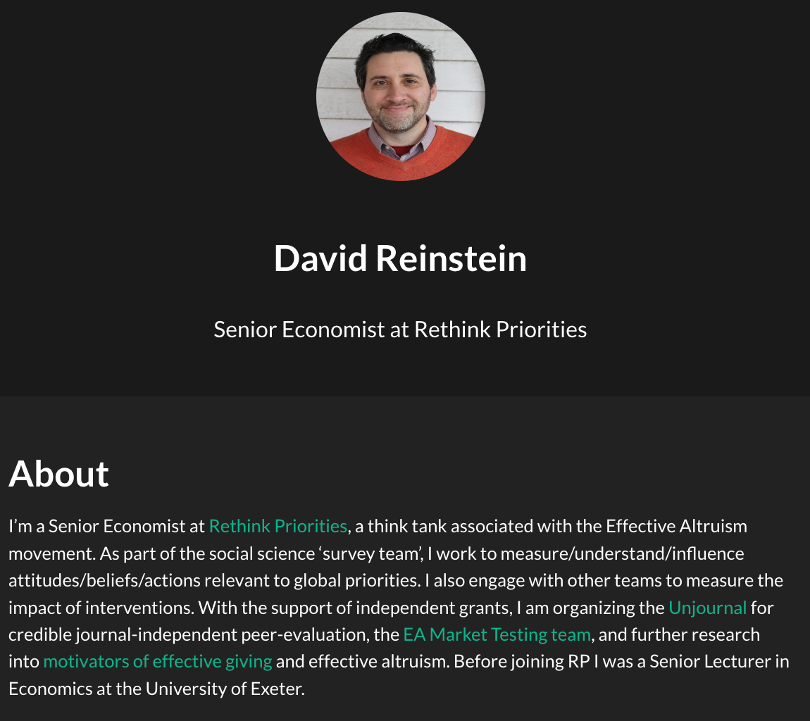New ideas?

Berkeley:
- Proposing ‘new ideas’ like the Poor Card
Limited audience…
‘How does this inform government policy?’, ‘How does it inform/relate to standard Economics (tractable mathematical) models of optimization?’, ‘Will this publish well’?
Proto-EA?
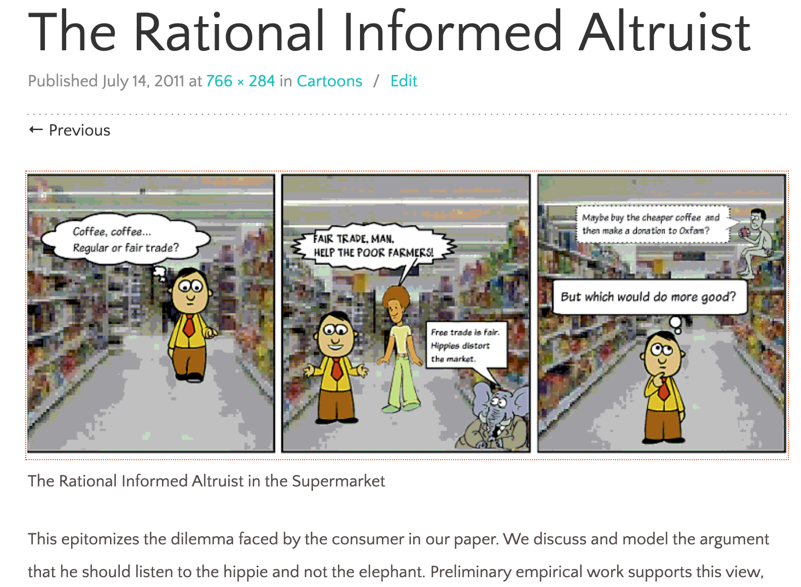‘Does one donation come at the expense of another’?
Should an ‘efficient altruist’ purchase ‘fair trade’ products, bundling consumer choices with additional revenue to poor farmers/workers?
Considering ideas with a pre-EA policy audience.

From Reinstein, 2011
“Research agenda”
Things I care about: lining up with concepts in the discipline? But I really cared about ideas and impact.
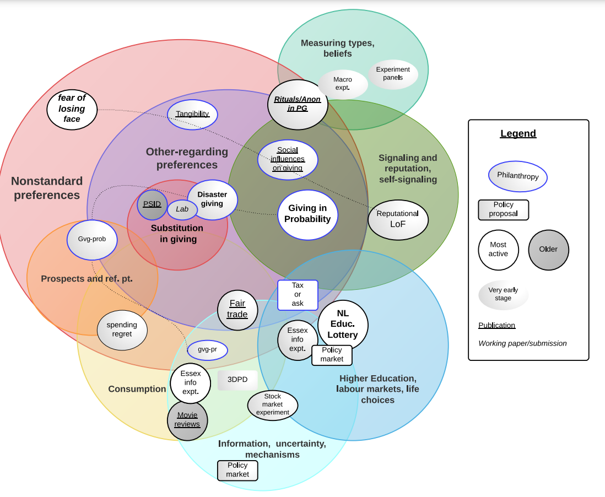 Essex, UK:
Experiments/trials and observational work on charitable and gift-giving: social influences, types of income/uncertainty
Applied microeconomic theory
Moved to Exeter, UK
to pursue ‘Impact’ (ESRC grant, REF focus)
Building teaching/research/outreach resource like innovationsinfundraising.org and ‘barriers to effective giving’
“Researching and writing for Economics students”, open science initiatives
innovationsinfundraising.org
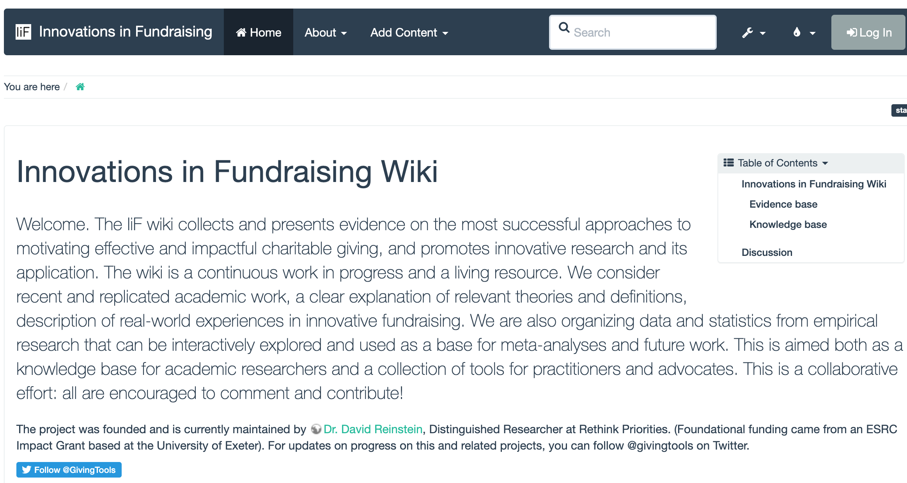Pros and cons of (Exeter) academia
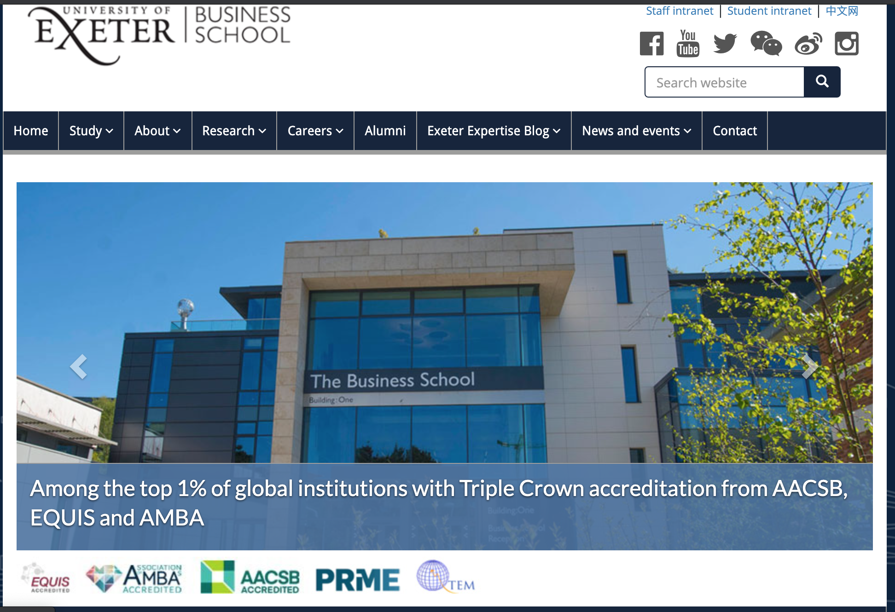Positives: Support, research freedom, deep theoretical work
Limitations: Politics/management, journal games, less-engaged students
Rethinking my priorities (eyeroll)
Discovered EA movement, increasingly working with EAs/EA orgs on effective giving research
Next step, getting involved in data science training consulting:
In the time I spend getting distracted by university and teaching admin., I can earn the same as my UK salary, do the research/impact I want to do in the rest of the time
Applied to RP, working PT, consulting PT, pursued external grants
Grant from LV Philanthropy to pursue ’Barriers to Effective Giving” synthesis and field experiments
… “now I can do this Full Time”*… left secure academic post
Pay rises: Now you could ~earn a UK academic salary working even 50% at RP!
What I’m doing now
Effective Giving/EAMT
Longview-funded: ‘Barriers to effective giving’ \(\rightarrow\) EA Market testing “making more EAs”
Advising on promotions, field experiments and trials with GWWC, 80k, others.
Research: Meta-analysis and synthesis, field experiments and trials in large-scale contexts (e.g…); ongoing, ask me
But I did abandon much of my previous (less-EA-relevant) research, struggling to push forward the EA-relevant stuff
EA Survey+, outreach & ‘movement building’
Survey methods: representativeness, survey design
Identifying key questions for ‘tracking a movement and its impact’, e.g.,
- “Which people are likely to contribute the most; ‘selecting’ where to promote’” (ML & inference)
- “What will the impact of the EA community be in 10-20 years?” (APC modeling)
- Do anticipated donations tend to exceed actual donations and when/why?
Analysis: Visualization, descriptive, predictive
Moving to a data science/open science systematic transparent approach (R/Quarto/Github, clean code)
Outreach and message testing
Representative and targeted surveys
Awareness of EA, understanding and receptiveness to parts of EA message
Support for policies (e.g., animal welfare, pandemic preparedness)
Support for other teams and projects
Modeling the meat industry; designing behavioral trials
How to value income at different starting levels: real tradeoffs that even the World Bank ignores
Promoting explicit uncertainty modeling (MonteCarlo) for Cost-effectiveness-analyses
Connect w/ academia; publishing, recruiting, advising students
Should you work at RP?
If you are here probably yes
At least worth pursuing, unless you are interested in pure theory.
We don’t have job openings right now, but have general interest forms on our website people should definitely submit. If people are interested in AI work, Epoch is hiring (job ad on our page too)
careers.rethinkpriorities.org. We should be hiring again for longtermism roles later in the year, so newsletter signup is always a good call to action
Academia vs EA (Rethink Priorities)
Academia
Publications, grants, citations, students \(\rightarrow\) jobs, awards
You need to be ‘first to publish’ on a new topic; supporting evidence less valued
RP
- Impact on funds allocated and ‘influence’ on DMs
- Publications and grants as a means to an end; discussion of how much to publish traditionally versus other outlets
model estimates impact by considering the probability of our influence targets updating in the correct direction … amount of money and resources that are changed, how much better (or worse) that change is, the counterfactual years of credit due to the work, and the costs of the project.
Operationalizing: ‘Which research to prioritize’?
‘How to measure research impact?’
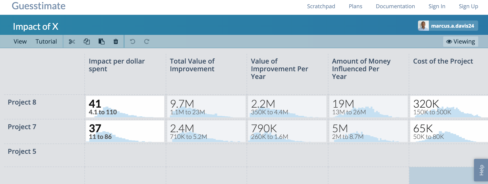RP impact calculation exercise template
Explained:
Money-metric impact of a random-ish sample of projects:
‘Multiplying the uncertain estimates of’ (Bayesian):
- Probability our research changes the “influence-target’s” choice \(\times\)
- probability this is in the right direction \(\times\)
- Funds affected \(\times\)
- Proportional increase in the funds’ impact \(\times\)
- “Counterfactual years impacted”
Divide by project cost
\(\rightarrow\) “Impact per dollar spent”
\(\rightarrow\) Extrapolate to total value of RP
Changing the game:
The EA research landscape - a new ‘funder’ and consumer of research
We care about research value, accuracy, and impact, not as much ‘innovation’ or theoretical rigor
We are not so tied to traditional institutions (publishers, traditional grantmakers)
Unjournal
\(\rightarrow\) ‘Evaluated project repo’ rather than frozen publications?
Can we help academia escape the journal publication collective-action problem?
Plug for participation
What high-quality research is most GP-relevant and needing further assessment?
Reviewing, other help
Consider ‘submitting’ your work
Pros/cons of academia vs RP
Why RP
You want to have an impact through your research and work → RP is more aligned to impact than academia
Enhance the rigor of EA research (and maybe bring real impact to academia?)
Challenging/interesting methodological and theoretical questions (WIP taster here) e.g.,
How to get a representative sample of a rare population without clear benchmarks
“Value of income”: Relative tradeoffs among the very poor/less poor
. . .
Cross-price elasticities in systems with bundled goods
Correlated uncertainty in Montecarlo simulations
A/B testing: Adaptive designs, reinforcement learning, Bayesian inference, design for ‘diagnosands’
Time & location flexibility (fully remote), good pay/benefits
Work with really devoted colleagues: Virtually no internal politics, gamesmanship, cynicism
Part of EA ecosystem: entrepreneurial impact opportunities, cutting-edge of the conversation
Non-BS interdisciplinary work: Very strong in data science, psychometrics, analytic philosophy, biology
Management actually cares about staff, no-BS admin
Why not work at RP? Who shouldn’t? … not if you want
To focus on doing pure/basic research, advance specific parts of economic theory and methods
… Complete research freedom to pursue any topic without justifying it to a stakeholder
To focus solely on economic theory
To advance US/UK government policy in ‘non-priority areas’. To focus on teaching and be in a university environment. The job security of a US tenured position
But still, some of this could be combined with a career at RP, and some of these are not always compatible with academia
Economists at RP: Who are we, what do we do, what will/should we do in future, what skills do you need?
Global health
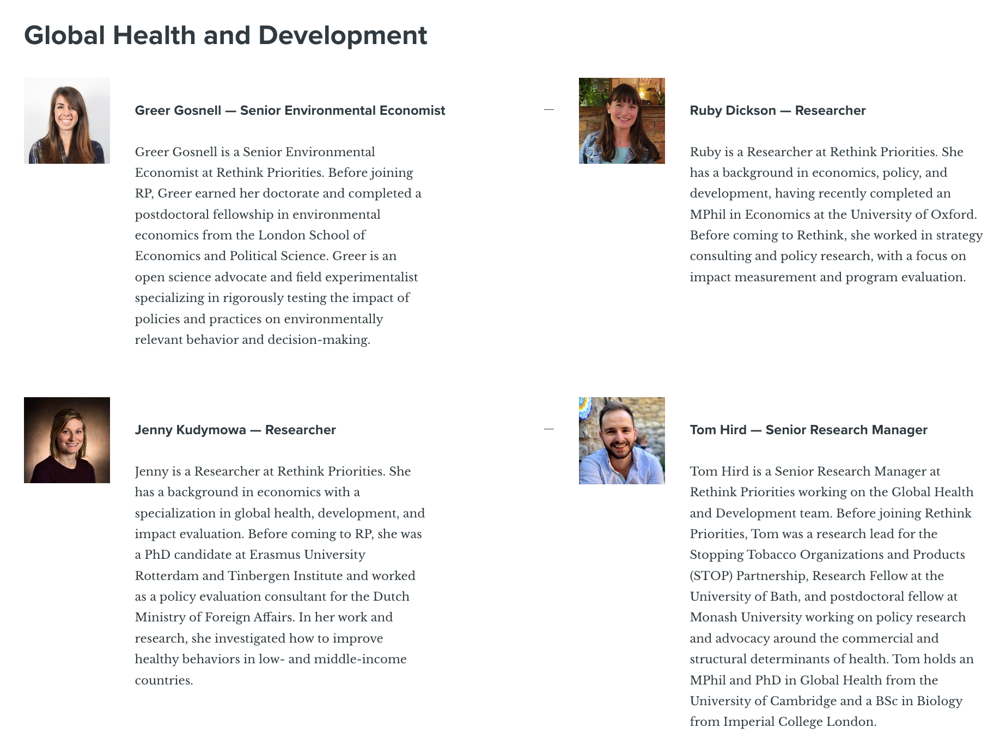Surveys & movement building (Social science, data science)
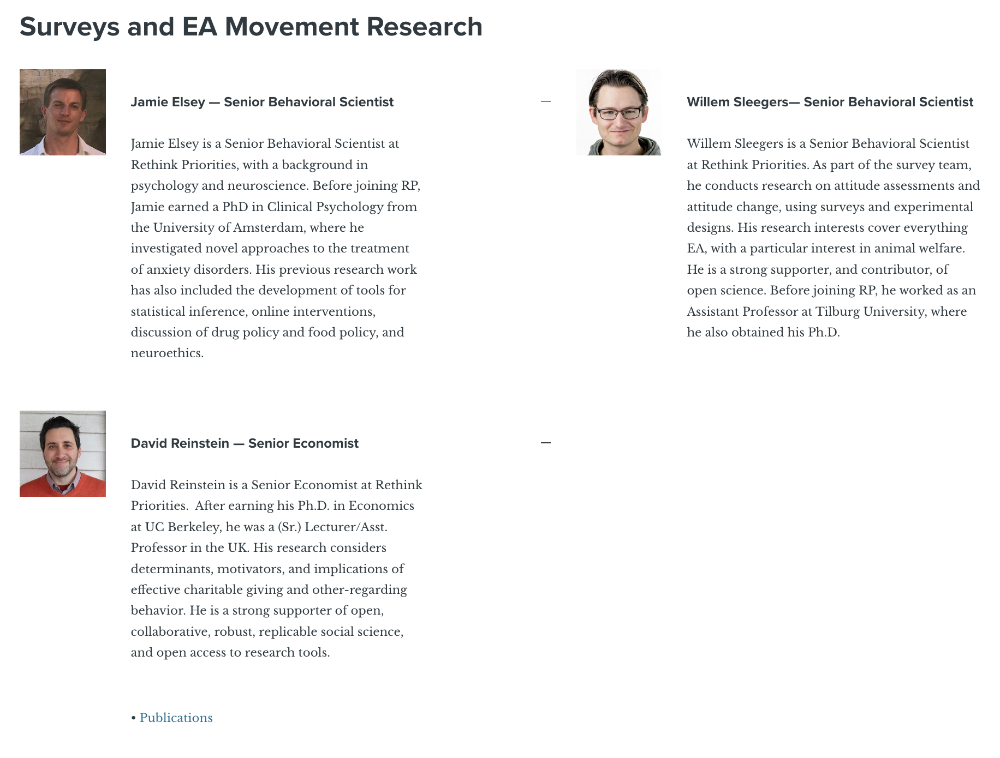Animal welfare (Interdisciplinary)
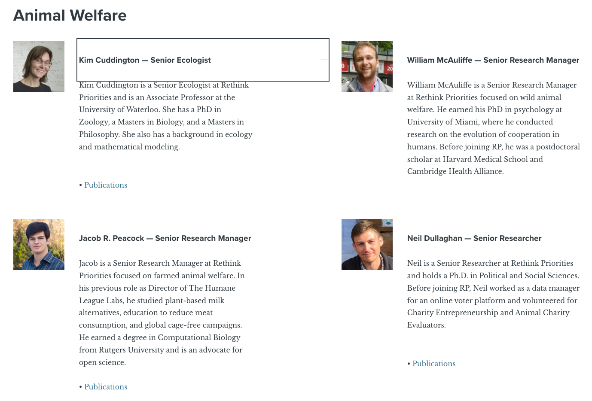Animal welfare …
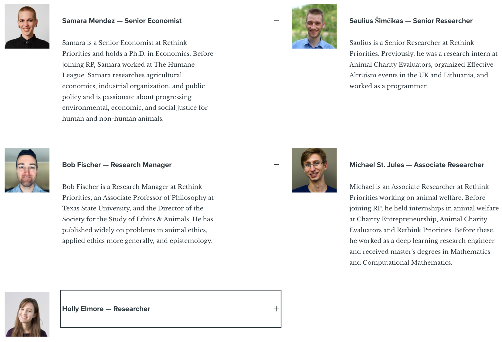Some Econ-ish questions at RP
Market equilibrium and statics
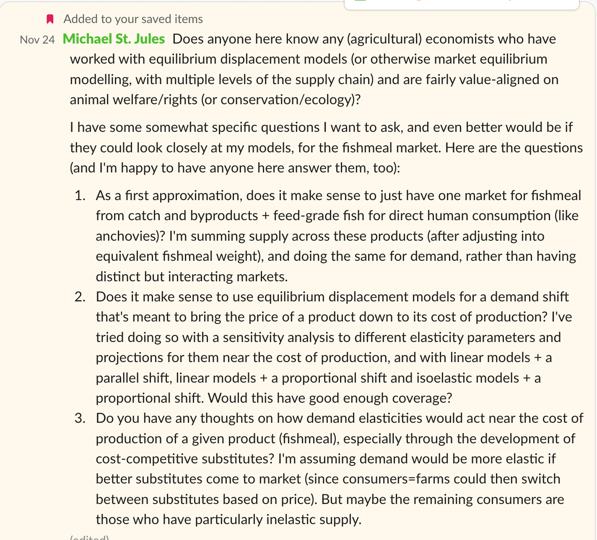Macro, public economics
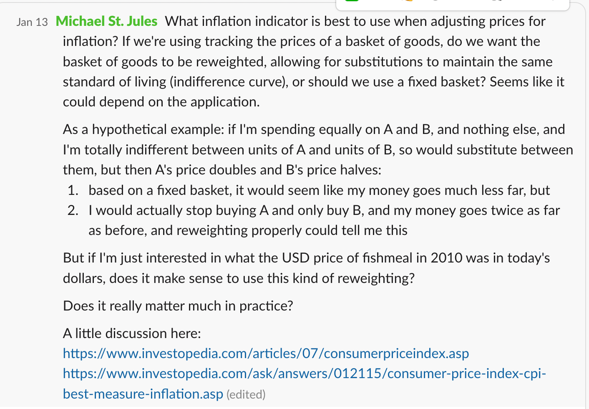Welfare Economics, Micro/normative
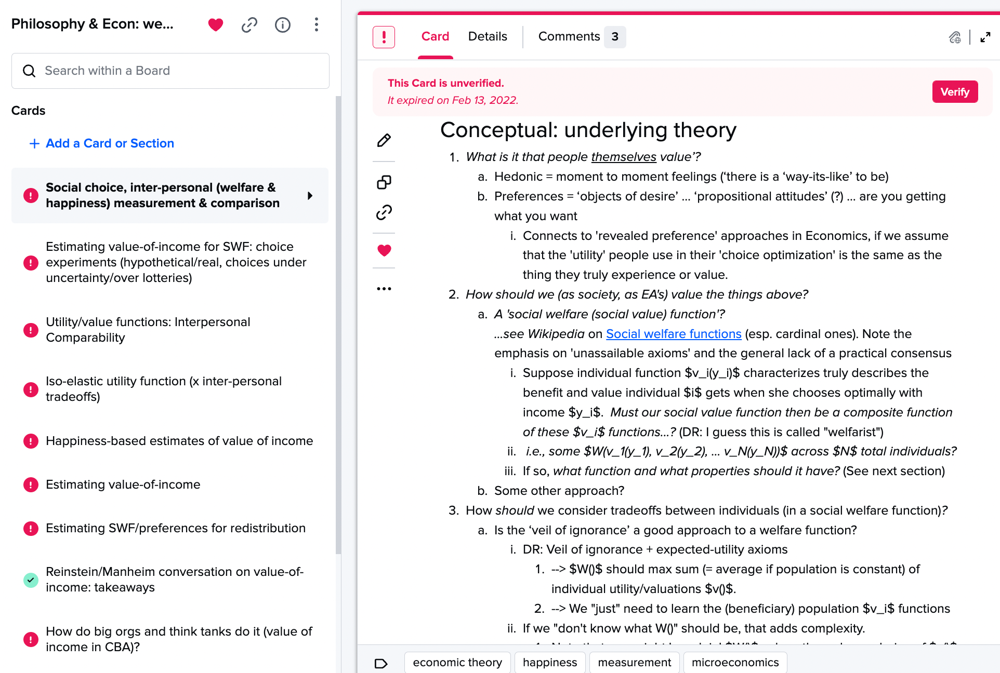Skills you (may) have we can use
Most are kind of obvious:
Data and statistics, Econometric modeling and causal inference
Microeconomics: A clear view on optimization problems and strategic concerns … reducing problems
Finance: CEA for causes/interventions, EA movement & RP decisions, Prediction markets
Development economics
Modeling markets to consider the impact of interventions (especially in Animal welfare, but also for the environment, reducing AI risks, etc.)
With actual data/statistics
Theoretical ‘possible directions of effect’ … with explanation
Being able to read and assess the literature!
Skills/tools you may need at RP that you might miss get in an Econ. PhD
Caveat: This is my taste; not everyone at RP prioritizes these. It also depends which team at RP you want to join, and what work you want to do
Robust measurements for decision-msaking: Fermi estimates, Monte-Carlo (explicit uncertainty), forecasting, value of information calculation, cost-effectiveness calculations (actually making the hard choices)
Data science, coding: R/tidyverse, functional programming and clean coding, Git/Github, Dynamic documents
Statistics and ML: Bayesian analysis, predictive modeling
Experimental and survey design: Power analysis (‘diagnosands’), design for adaptive trials, design for A/B decision-making, survey question design
Psychometrics: Explanatory and confirmatory factor analysis, construct validation
Core but unfashionable Economics: Modeling input and output markets (especially for animal welfare team)
Key EA principles and terminology (present audience excepted): ITN framework, population ethics considerations, longtermism, etc. “Utility” considered in different ways outside economics
Domain-specific knowledge: Animal cognition/biology, science of pandemic risks, etc.
Writing for stakeholders/EA: Concise and specific, reasoning transparent, explain technical concepts
FAQ (fervently anticipated questions)
- Do I need a PhD to work at RP? Does it help?
- No, you don’t need it. Yes it will probably help you get hired, will increase your salary, and you will use many of the skills gained in the PhD, and may further your PhD research. (But there should be better non-PhD alternatives; see my post.)
- Can I build an ‘academic research portfolio’ while working at RP?
If you are self-motivated, yes.
There are strong opportunities for running field experiments with RP partners, as well as large scale surveys.
Push to strengthen RP’s rigor… Shared ‘methods books’, seminars, sabbaticals, Unjournal, etc.
- Can I pursue my own research/agenda at RP?
Not automatically, but your research agenda may align with RP’s work anyways
And you can make a case for it to funders and stakeholders
…
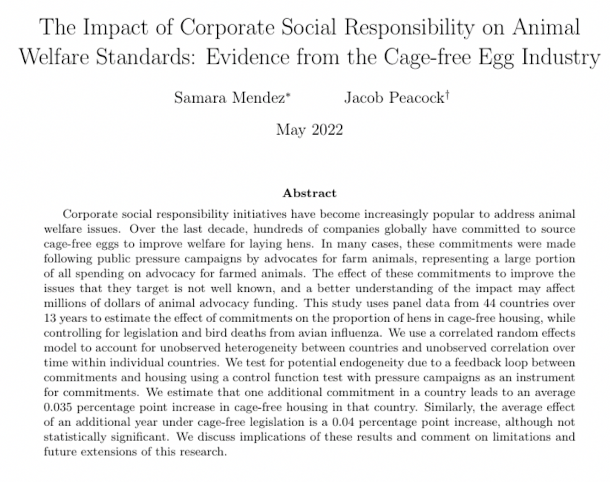Effective altruism and global priorities
Empirical measurement informs ‘production function for good’
‘What has value and moral worth?’ (e.g., sentience research)
How to measure value? (e.g., pain/pleasure DALY)
How to achieve value?
Direct interventions and policies, direct/indirect, short and LT impacts
Very long term impacts, inference with deep uncertainties
Should we loosen migration restrictions to increase global welfare? What is a politically feasible level of migration? (from Rhys-Bernard syllabus)
Estimating, in terms of SWB, the impact of potentially highly-effective interventions, including: psychotherapy for common mental disorders; cataract surgery for blindness; deworming tablets to improve lifelong earnings (from Happier lives institute research priorities)
Empirical (behavioural) … How to get people and institutions to care about others (altruism) and about being effective in doing so?**
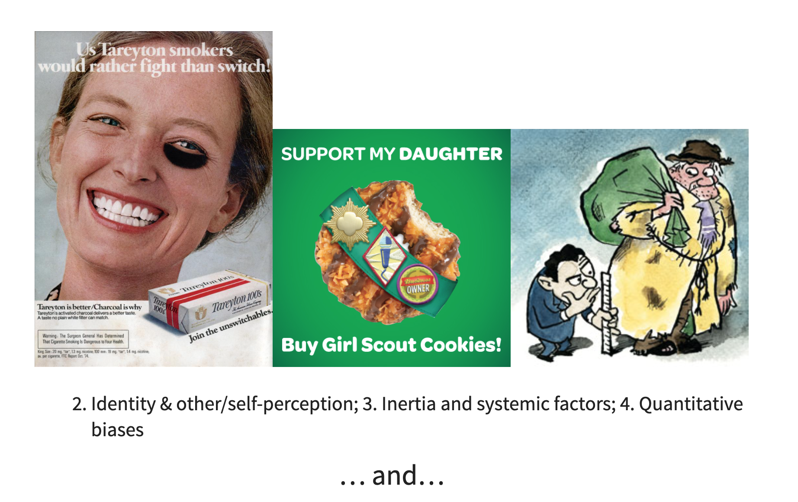Barriers to considering effectiveness and acting effectively (my focus – open project HERE)
Applied work : message testing, information and choice-architecture
EA perspectives: Why do we need research, what should research do?
Defining a moral, value and choice framework, working out thorny moral decision-optimization issues
Empirical measurement of value and ‘what works to achieve it’
Empirical evidence on persuasion: ‘how to get people to act pro-socially and effectively’
Defining a moral framework, considering ‘what has value’, and ‘how to learn and choose’?
… how to value things and be consistent, how to use uncertainty and information in making altruistic choices
E.g.,
moral weights
population ethics
moral uncertainty .